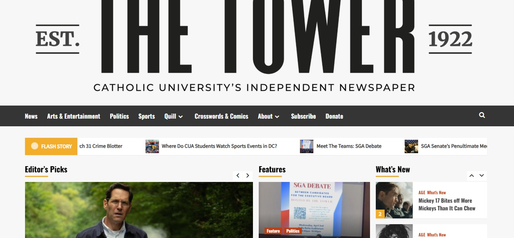

Name: Kyle Egan
Course: LSC555
| User Input (Action) | System Output (Response) |
|---|---|
| Click on menu items like News, Sports, or Opinion | Redirects user to a new page showing posts in that category, with post headlines and thumbnail images. |
| Click on a specific article title or image | Opens full article with embedded images, social sharing options, and related post recommendations at the bottom. |
| Enter a keyword in the search bar | Returns a list of posts with the term in the title or body. No filtering or sorting by date or relevance. |
| Click on archives year | Brings user to a page showing posts from that month and year. |
Strengths: The site has a clean and modern layout with fast-loading pages. Articles are clearly laid out, with intuitive navigation supported by headings, thumbnails, and section labels. The visual consistency across different pages enhances user confidence and familiarity when exploring the site. These strengths make it easy for casual users to explore articles and sections without requiring prior experience with the site.
Weaknesses: The search feature is quite basic. It does not offer any filtering or sorting capabilities, which makes it inefficient for users looking for specific information. Search results do not include preview text or publication dates, so users must click into each result to determine its relevance. Accessibility support is limited—text resizing tools, screen reader optimizations, or image alt text are either minimal or missing altogether.
Below are two example screenshots illustrating some strengths and weaknesses:
Test Scenario: A student was asked to explore how The Tower has changed over time using the website. They were given five minutes to conduct the search.
Observed Behavior: The user began by scrolling down the main page of the site, where they noticed a section for archives, broken out by month and year. The user began by selecting March 2025. The user was presented with several articles all with thumbnails. Once an article is selected, the full article is shown with images. One of the other functions of the new articles is the use of hyperlinks to other sources. The user then located the archives and navigated to 2017. The user immediately noticed that many of the articles did not have thumbnails. Once in the article, they were not as pleased as there were no images and hyperlinks.
Issues Encountered: This site only goes back less than a decade, and the user attempted to find some ways to get to the older archives from this site, which they were not able to do.
Emotional Response: The user became somewhat frustrated, feeling limited in their ability to see the evolution of the paper. They expected a clearer path to browse older content or access special historical collections.
Test Scenario: The user was asked to imagine they were a teacher researching campus perspectives on WWII and the Vietnam War. They were given 10 minutes to locate two articles on each topic.
Observed Behavior: The user began by entering "World War II" and "Vietnam" into the search bar. Results were limited, and the search tool did not clearly prioritize relevant articles. The user tried using different keywords such as “Vietnam War campus” or “WWII student reaction.” After some effort, the user located a couple of articles mentioning veterans and ROTC commemorations but had difficulty verifying if they reflected actual student perspectives during the historical time periods.
Issues Encountered: The search returned mixed results with no filtering options. Articles about war remembrance events often appeared, but few were direct student-written pieces from the relevant eras. Without the ability to sort by decade or article type, identifying authentic period perspectives was extremely difficult. The lack of article summaries or publication years in the search preview also made it harder to know whether to click.
Emotional Response: The user was mildly discouraged. They were interested in the topic but found the website's limitations made this research-heavy task more frustrating than expected.
Overall, users appreciated the general layout and ease of exploring current articles but encountered major friction when trying to conduct archival or academic-style research. There is a gap between what the site does well—supporting current campus browsing—and what it lacks, which is long-term content accessibility and robust search tools.